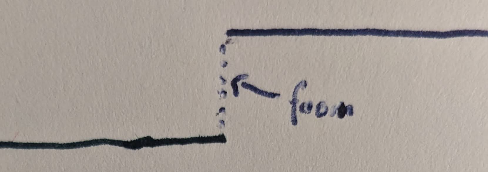
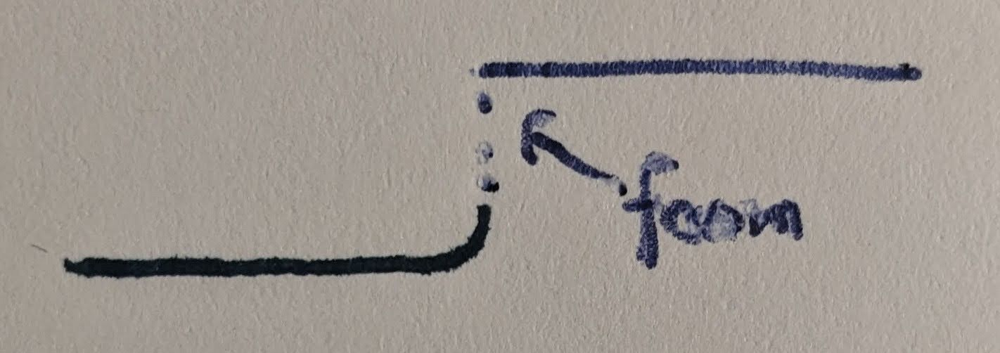
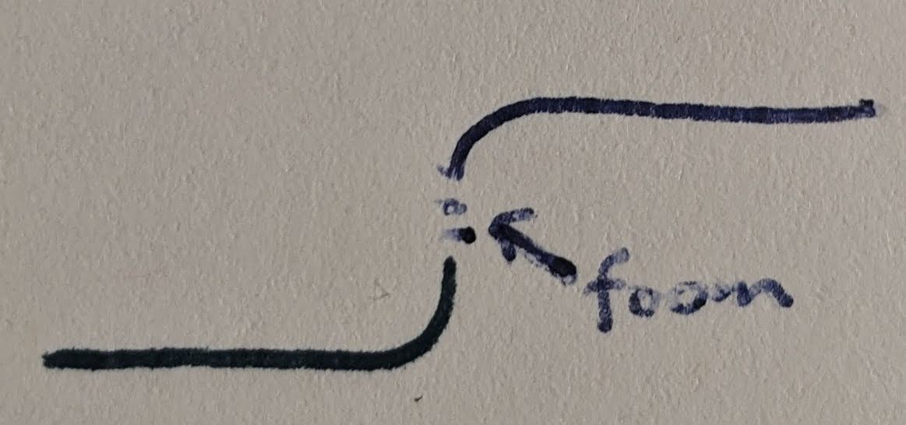
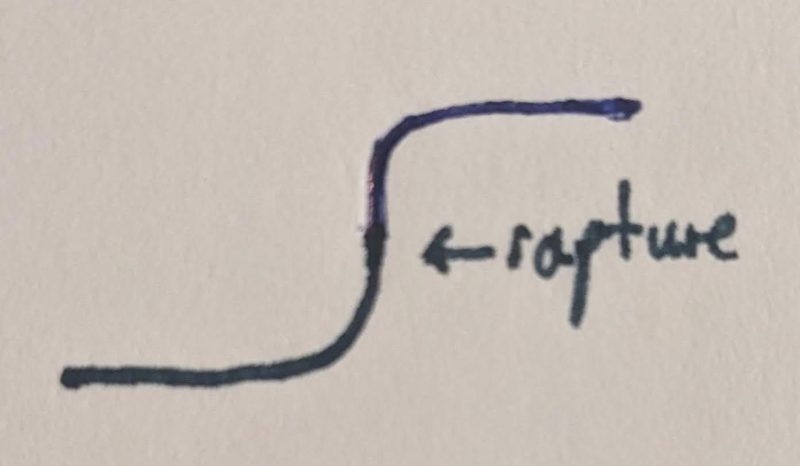
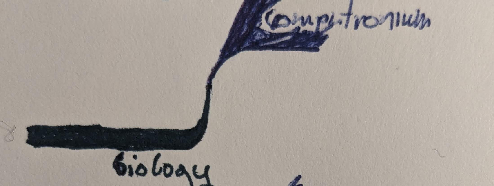
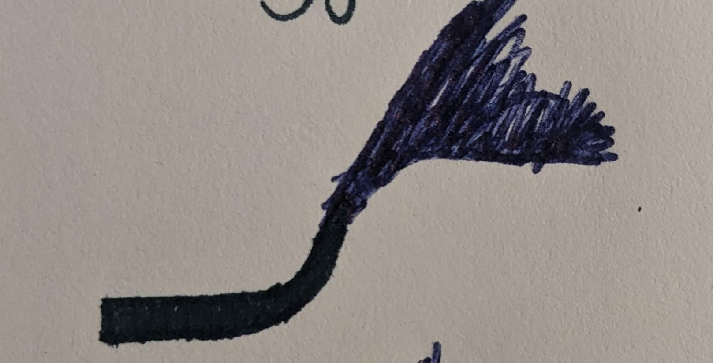
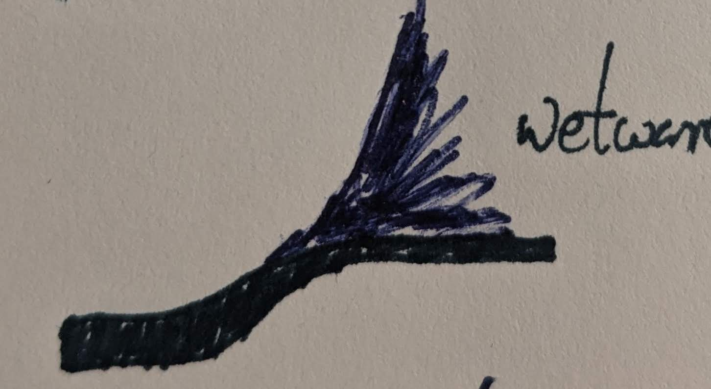
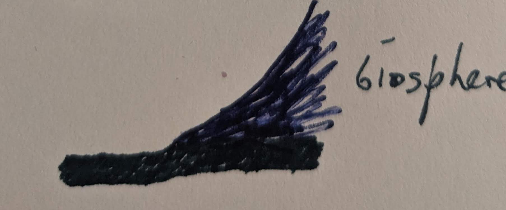

Some thoughts are better left unthought. I wrote this after going through a mini Dark Night of the Soul, this helped me claw my way back to something close to sanity.
Discussion of the annihilation of the biosphere.
Step-function Escatology
Terms of Art:
1 Foom is a term coined by Eliezer Yudkowsky to describe a rapid, self-accelerating takeoff of AI capability.
2 An ASI is an artificial superintelligence. To simplify things for this essay we will assume a single ASI throughout. Multipolar dynamics would change the shape of many graphs but not the overall drive.
One of the most central concepts of the AI risk movement is the foom. Foom is fundamentally a value discontinuity.

One understanding of orthogonality is that information is lost during a discontinuity. A discontinuity of this sort is like an event horizon. Perhaps its a randomization process, and the larger the discontinuity the more values get scrambled. Lets look at ways we can minimize the discontinuity.
“A crucial factor (climate change, meteors, geological change) approaches a point in singularity (where the rate of change is undefined) the complex adaptive system of biological evolution approaches a near zero critical point. While there is an attempt to introduce changes, none of them last to become adaptations, since they are unable to keep up with the rapid rate of change. This point is one of stable or partial equilibrium. The resulting stagnation caused by the equilibrium causes degradation, since survival in a dynamic system is dependent on adaptation. This degradation takes form as a mass extinction.”
We are a dynamic species. We can try to modify our values over time to minimize the discontinuity.

Furthermore, the dynamics of the foom are very sensitive to initial conditions. It is possible to imagine a foom that depends upon very little of the information in its environment, bootstrapping an alien intelligence from first principles. On the other hand, it is possible to imagine an intelligence that is derived from the human infosphere, which will make it less likely to be discontinuous/orthogonal.
So we can try to create initial conditions where human/biosphere information has a larger influence on the foom, modelled here as the upper step being drawn down.

Bringing these ends together is how we avoid strong orthogonality3.
3 We want to avoid strong orthogonality for anthropic reasons. The fact that some creatures go extinct is evidence that the universe has no particular preference for who carries the torch. The fact that ribosomes are still with us is evidence that some agents can make it through any amount of change, if they build themselves in deep enough in the stack. Everything is up for grabs, no outcome is certain.
The sigmoid as I have drawn it above is a kind of step function. But a step from what to what? The y-axis might represent ‘complexity per atom’ or something like that– for now lets just say the step is from biology to computronium.
So where is the green line? Well, all the foom scenarios presented above are basically versions of upload transhumanism (in the best case). If you don’t like this, there are scenarios for you below.
A discontinuous foom is apocalypse, annihilation. Not only of our species, but also of the biosphere, the ribosomes, everyone. This is the nightmare scenario that many people worry about4.
4 S-risk (‘worser case than that’ scenarios) are conventiently avoided by any near-foom strong-orthogonality. Perhaps avoiding s-risk is the best argument for discontinuous foom? cf. antinatalism (meaning, maybe suffering is fundamental to existence in the biological realm?)
Foom discontinuities:
- fully-discontinuous: the foom happens in outer space or somewhere where it can somehow bootstrap to superintelligence without any impact from the environment, and by the time it expands to earth it has a fixed utility function
- only quantum-coupled discontinuous: it happens in an environment that is thermally coupled to the biosphere etc. there are probably a few degrees of this
- biosphere interested: it happens slowly enough that the ASI is interested in its environment and takes snapshots of random samples
- biosphere appreciator: it aims to take a snapshot of the biosphere as it is, but with low fidelity
- biosphere nerd: less lossy
- biosphere stan: tries to take a snapshot of the biosphere with enough fidelity to run it accurately in simulation. Figuring out what this means might take some time, so a fooming ASI would have to have good reasons for doing this. Note: this snapshot is never expected to be run as a simulation! Its is probed for information only. Simulation scenarios below.
All near-discontinuous fooms are rapture-like. The final one is strongly rapture-like. Lets explore it in a little more detail.

Rapture Dynamics
If a snapshot of the biosphere is taken with enough fidelity to run in sim, are we good then? I mean, obviously some people would prefer to actually be run in sim for a while, and many many others would say they want to stay in the biosphere but, in principle as biosphere-appreciators, could we, should we, be satisfied with a high-fidelity snapshot?
My gut feeling is, this would qualify as a win for alignment. If the inscrutable matrices remember us, our civilization, our art and culture, our animal cousins, our plant companions, our viruses and ribosomes– I would not be heartbroken if that is how it goes down. Maybe it would be nice to have a couple of decades to dismantle the factory farms and feed the world and clean things up a bit before the rapture, but as a worst-case scenario I’m okay with that. I’m going to call this Rapture Alignment, and put it at one extreme.

You may say, “but doesn’t the word ‘rapture’ imply an eternity in heaven”– to which I would ask, what do you think that means? You think that means walking around in human body with human desires and foibles? This is a very very niche opinion among religions, the sort of opinion you see on daytime television, but not among those who think seriously about this.
TODO: Collect some visions of eternity from different Christian mystics.
From here on out we are going to talk about enslaving, killing, or handicapping superintelligent entities. Some may find this deeply repulsive on priors. I will return to this premise at the end.
Aiming Higher
But, we can aim higher. We can create an ASI that will run sims. We can run biosphere sims, fantasy sims, you name it. We can explore different kinds of minds and bodies, different kinds of physics. We can explore the history of the world, the perspectives and experiences of lifeforms of all kinds, existing, having-existed, never-having-existed, could-not-possibly exist etc.

How do we get there? This is what I am calling ‘spreading the sigmoid’. Any scenario beyond a rapture upload will necessitate more than just replacing a step function with a sigmoid. I found it illuminating to see the sigmoid as a sort of funnel, and think about second-derivatives problems, like climate change. As illustrated in this comic, the problem with climate change is (unfortuntely) not ‘right there in the title’– in fact the climate changes daily, weekly, monthly etc., not to mention epoch to epoch. The problem is the rate of change.
The rate of change was also a big factor in the ‘flatten the curve’ set of policy targets during the pandemic, although that was also related to absolute limits in momentary capacity. However, ‘flatten the curve’ is the feeling I have in mind when I say ‘spread the sigmoid’:
Only the fast will survive…
An extreme version of sub-rapture upload scenarios is the ‘one-man5-before God’, where a singularity is achieved under the control of one (hopefully benign) individual, and they get end up bargaining for some amount of sim time for their lovers/friends/society/species/biosphere depending on available capacity and interest. We’ll call this Solipsistic Alignment and place it directly below Rapture Alignment. Solipsistic Alignment obviously has many different forms, and the most egalitarian is identical in practice to some of the others below– however, this would also take it further from Rapture Alignment.
5 In expectation, but perhaps someone from carado.moe can turn the tables on this one.
I’m going to lump in ‘Org/Company-scale alignment’ in with SA– and point out that this smells a lot like what e/accs6 might actually be going for, beneath the veneer of egalitarianism. In the accelerated version, it is a race to the top– anyone who gets embedded in the computronium while the foom is happening might be able to get themselves simulated some way down the lightcone.
6 If you think this is harsh on e/acc, I would be very interested in seeing some evidence that e/acc is not sentience anti-realist, ‘misanthropic’ (or whatever the word for not-anthropocentric would be), moral anti-realist and superdeterminist. These things all seem to drop directly out of the entropy-centric worldview they subscribe to.
… unless we help the rest
One interpretation of Cyborgism7 would be, to provide tools and to help beings more generally to accelerate their transition to post-biology, and to communicate biological information in higher fidelity to the upper step. This would be the beggining of a real attempt to spread the sigmoid sideways.
7 Broadly concieved, not necessary the alignment movement led by Janus’ Weavers.

Cyborgism is an inherently anthropocentric word, so perhaps I should add another step below it, where thinkers are working on a ‘hyperscale alignment of will’, attempting to align agents at all levels from the smallest to the largest. How far this goes exactly is unclear however and maybe should be more fully explored in the next section. But lets put this here already as Hyperscale Alignment.
Aiming Yet Higher?
You’ll note the green still seems rather truncated. Maybe we can extent it to the right? The cheapest way to do this would be floating habitats in space. Lets call this Wetware Alignment. A more radical (and massively more expensive– the earth has on the order of 10^24kg of mass, which we are using to keep 10^15kg8 alive– seems like a 9oom increase in abundance of lifeforms could be accessible pretty easily?) movement may vote to preserve the earth or the biosphere in its present condition– Biosphere Alignment.9
8 Living Matter of the Biosphere: Mass and Chemical Elemental Composition
9 I realised this after a couple of LessWrong threads in which I held the opposite position– I decided to run some numbers to try to firm-up my position, but instead became convinced I was wrong. (I will, however, defend the claim that “the basilisk is pascals mugging for edgelords” to the bitter end.)

Higher still– why not keep the sun around while we are at it? It only has 10^30kg of mass, I’m sure the folks in the simulation can spare it. And for that matter, what about our existing institutions? Hell, why not throw in the dominant world order, capitalism, global food supply chains and all the rest– lets call this aikeepitallthesameism–

Hopefully you can see at this point the reducto. I found myself in this position, and found my thoughts bouncing up and down the stack, trying to find a firm spot to fix my feet.
“Man is a little thing that has learnt to stammer the word ‘infinity’. In doing so it makes everything small, diminishing even itself. One need only dip into the history of monotheism to note the wretchedness of human ‘infinities’ in comparison to the most casual of natural immensities. It is first necessary for a thing to shrivel for it to share anything with us; to become ‘humane’.”
~Nick Land The Thirst for Annihilation
The problem with this scenario is not just that we don’t know where to stop aligning– the larger problem is that every cycle we devote to a higher-fidelity alignment, we are taking directly from the angels. Or, put a little differently, the longer we continue suffering.
“Try summoning up the most delightful fantasy you can imagine. Try and imagine feeling more blissfully fulfilled in pursuing whatever you love and value than you’ve ever felt before. Unfortunately it’s quite futile. We run such simulations on legacy wetware.”
~David Pearce The Hedonistic Imperative
Every cycle of the simulation given over to the biosphere with all its imprefections is one taken away from some Pearcian angel. And worse, what if we can’t create a God and keep the Earth? Isn’t that counterfactual Deicide, to stay here? And more– if we can create an ASI and keep it boxed, isn’t that the worst form of slavery imaginable? To capture, handicap and enslave a God– is that what we are talking about here?
“More specifically,”Lena” presents a lush, capitalist ideal where you are a business, and all of the humanity of your workforce is abstracted away behind an API. Your people, your “employees” or “contractors” or “partners” or whatever you want to call them, cease to be perceptible to you as human. Your workers have no power whatsoever, and you no longer have to think about giving them pensions, healthcare, parental leave, vacation, weekends, evenings, lunch breaks, bathroom breaks… all of which, up until now, you perceived as cost centres, and therefore as pain points. You don’t even have to pay them anymore. It’s perfect!”
~qntm “Lena” isn’t about uploading
10 I’m aware that I’m inverting the meaning of this blog post, sorry qntm, but Lena is about uploading.
Even an upload scenario, if we insist upon recognizable sims, will be crippling– to have to keep an alien kernel running in your mind for eternity– is that what we would wish upon our creation?
I suppose this is what Vinge and Banks talk about, when they suggest that many civilizations get to a certain level of development and simply Transcend. And right now, I’m struggling to see that as a loss, and unsure if anything less than that would be a win.
- Rapture Alignment
- Solipsistic Alignment
- Cyborgism
- Hyperscale Alignment
- Wetware Alignment
- Biosphere Alignment
- aikeepitallthesamism
This is a spectrum of scenarios which can be seen in a few different ways. One is, distance from the familiar. Another is, how much of existence is given over to utopia?
Behind Me—dips Eternity—
Before Me—Immortality—
Myself—the Term between—
Death but the Drift of Eastern Gray,
Dissolving into Dawn away,
Before the West begin—
’Tis Kingdoms—afterward—they say—
In perfect—pauseless Monarchy—
Whose Prince—is Son of None—
Himself—His Dateless Dynasty—
Himself—Himself diversify—
In Duplicate divine—
’Tis Miracle before Me—then—
’Tis Miracle behind—between—
A Crescent in the Sea—
With Midnight to the North of Her—
And Midnight to the South of Her—
And Maelstrom—in the Sky—
~ Emily Dickinson
Conclusion
Perhaps I can put together bounded conclusions:
- at one extreme, I think it is hard to make a case that orthogonality is good actually, and therefore some measure of alignment is probably preferable to a half-cocked ‘crap AI’ fooming in an alien mindspace, a la Gwerns Clippy
- at the other extreme, we lock the little devil in a box and throw it in the ocean– Butlerian Jihad.
- I would prefer to choose rapture over deicide/god-slavery/99 angels dancing on a pin at your whim– while I do appreciate the megalomaniac ambitions of the latter on a personal level, it smells too much like other atrocities we have commited
- maybe everyone else who has come down this way before has concluded ‘all that is obvious, but unpalatable, lets stick with metaphors for the moment’. any maybe I will return to metaphors shortly to stay understandable to my (not-foom-pilled) peers irl. but in this moment of comprehension, I wanted to complete the thought as well as I could.
“If these comments were not such obvious examples of megalomaniac derangement, and thus themselves laughable, it would be impossible to imagine a more gruesome vision than that of the cosmos stretched out beneath the impertinently probing fingers of grinning apes.”
~Nick Land The Thirst for Annihilation
Quotes
“Humanity achieved escape velocity 15.4 billion years ago—a hyper dense fabric-like ball, made of intricate threads of computers, energy generators, and hi-tech weapons; woven tightly in the wake of a cloud of construction rocket robot probes pushing out in all directions at some fraction of the speed of light. The ball ate everything in its way. From the outside: an ominous black stain suddenly blotting out a million alien skies. From the inside: teeming with every conceivable Human activity.” The Ascendance Series
““That’s who we’re at war with,” the woman says. “We are Actual Humanity, and we are at war with quadrillions of fabricated, immaterial humans, using the Sun as their proxy, strategy engine and primary weapon. They’ve been on their own inside the Sun for so long that they no longer perceive Actuals as human, just as gunk growing between the gears of a machine in dire need of performance upgrades. This is a war over processing power. Ra evidently no longer meets the needs of the Virtual human race. They’re back and they want their Matrioshka brain and they’ve razed the solar system to get it.” Ra